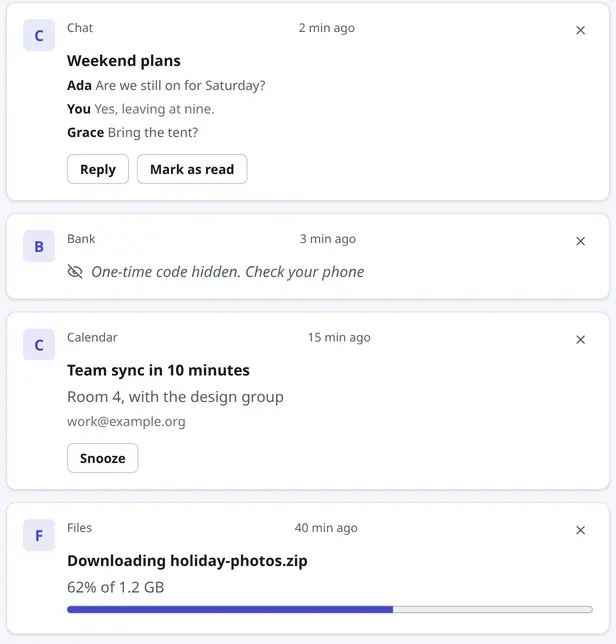
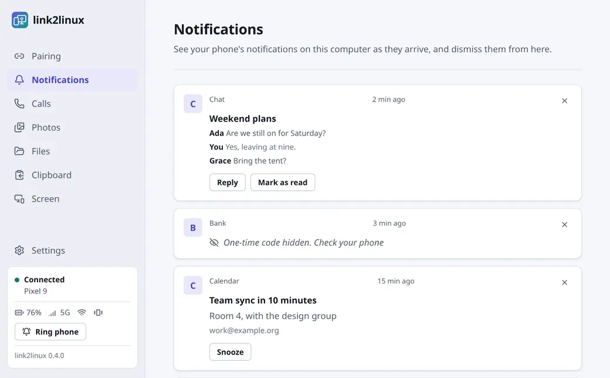
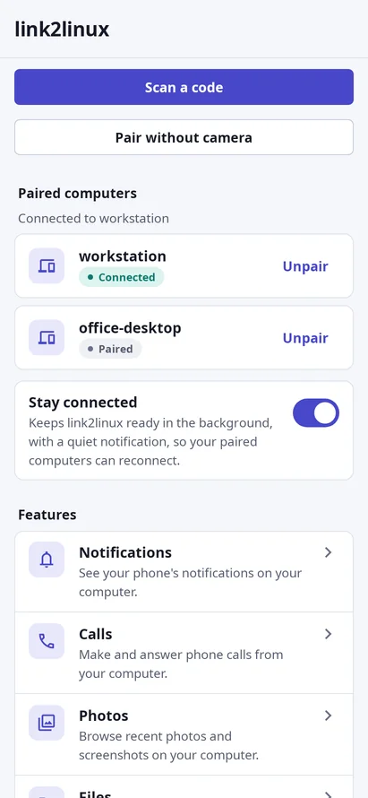
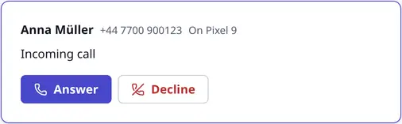
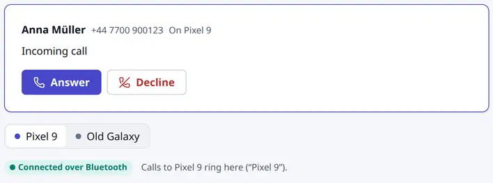
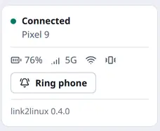
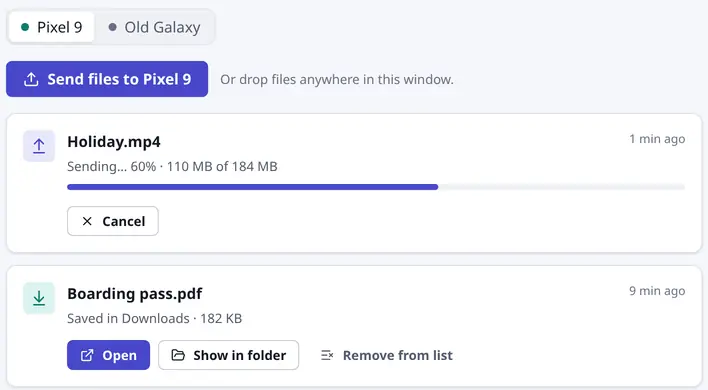
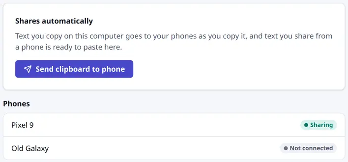
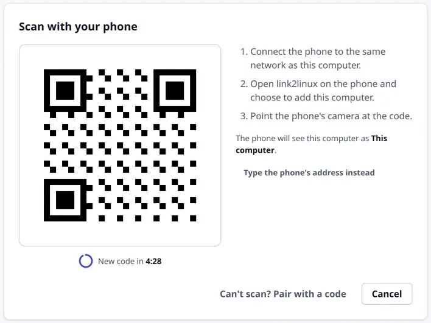
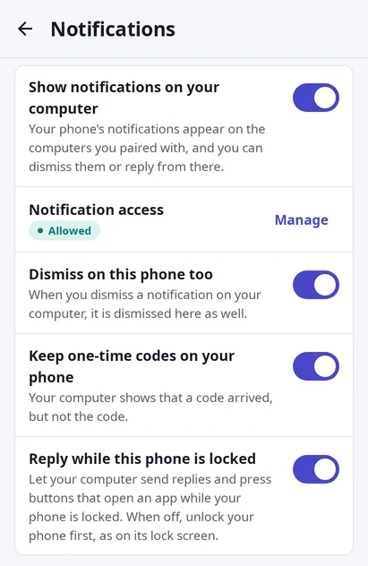

Notifications
Your phone’s notifications appear on your computer as they arrive. Reply to messages, press their buttons, and dismiss them on both devices at once. One-time codes stay on your phone.

Answer notifications, take calls, send files and copy and paste between your phone and your computer. They connect directly over your own network, with no account and no cloud.



Free and open sourceGNOME, KDE Plasma and other desktopsWayland and X11x86_64 and ARM64Android 8.0 and newer
Features
Each feature has its own switch on your phone, so you share only what you choose.
Your phone’s notifications appear on your computer as they arrive. Reply to messages, press their buttons, and dismiss them on both devices at once. One-time codes stay on your phone.

Answer, decline and dial from your computer, and talk through its microphone and speakers over Bluetooth.

See your phone’s battery, signal and sound mode, and make it ring at full volume when you can’t find it, even on silent.

Drop files on the window to send them to your phone. Share files from any app on your phone, and they land in your Downloads folder.

Text you copy on your computer is ready to paste on your phone. Send your phone’s clipboard back with one tap.

Browse your phone’s newest photos and screenshots, and save the ones you want to your Pictures folder. Nothing is written to disk until you save a photo.
See your phone’s screen in a window. Allow control on your phone, then tap, swipe and type on it from your computer. Your phone asks every time before it shares.
How it works
Your phone and computer find each other on your network every time after the first.
Install link2linux on your computer with one command or a package, and the APK on your phone.
curl -fsSL https://codesensei-tushar.github.io/link2linux/install.sh | shYour computer shows a code and your phone scans it. No camera? Compare a six-digit code on both screens instead.

Calls, phone status and ring work from the start. Notifications, clipboard, files, photos and screen stay off until you turn them on, and Android asks for each permission only then.

Privacy and security
There’s no account, no server in between and no telemetry. Your notifications, files and photos go straight from one device to the other.
Read the security detailsThe two connect over your Wi-Fi, or your computer joins your phone’s hotspot. Nothing goes over the internet.
Every connection uses mutual TLS 1.3, pinned to the keys your devices exchanged when you paired them.
The QR code carries a one-time secret, so another device on your network can’t pose as your phone or your computer.
Your phone announces itself with a rotating tag that only your paired computers recognise, and no device name.
The code itself never reaches your computer, which only shows that one arrived. You can change this on your phone.
The desktop app, the Android app and the protocol are open source under Apache-2.0. Read the protocol
Download
Free for Linux on x86_64 and ARM64, and for Android 8.0 and newer.
Pre-release v0.4.0
GNOME, KDE Plasma and other desktops, on Wayland or X11.
Install with one command
curl -fsSL https://codesensei-tushar.github.io/link2linux/install.sh | shIt picks the right package for your system, checks it against the release’s SHA256SUMS, and installs it. Read the script
Or download a package
sudo apt install ./link2linux_amd64.debsudo dnf install ./link2linux.x86_64.rpmchmod +x link2linux-x86_64.AppImage && ./link2linux-x86_64.AppImageflatpak install --user ./link2linux.x86_64.flatpakARM64 is for computers with 64-bit ARM processors. The install script picks it by itself.
Android 8.0 and newer.
App store listings come later.
Every release has a SHA256SUMS file. Put it next to your download and run:
sha256sum -c SHA256SUMS --ignore-missingEach file also has a GitHub build attestation that shows it was built from this repository:
gh attestation verify link2linux_amd64.deb --repo codesensei-tushar/link2linuxSomething else? Ask on GitHub.
No. Your phone and computer only need to be on the same network, or your computer can join your phone’s hotspot. Calls use Bluetooth.
64-bit Linux computers, x86_64 or ARM64, with GNOME, KDE Plasma or another desktop, on Wayland or X11.
Android 8.0 and newer. iPhones aren’t supported.
Bluetooth on your computer, and PipeWire 1.4 or later with its own Bluetooth backend, as in Ubuntu 26.04. The PipeWire in Ubuntu 24.04 is too old, and the Calls page tells you when yours is.
Check that both are on the same network and the phone app is open. If a firewall blocks the phone’s announcements, allow mDNS (UDP 5353) and UDP port 27381. The .deb and .rpm include firewalld and ufw definitions for exactly these, which you turn on yourself. You can also type the phone’s address on your computer: the phone shows it while it waits.
Yes, when GStreamer has an H.264 decoder installed, such as gstreamer1.0-libav. Without one, you see about 12 still pictures a second. Mirroring has no sound yet.
Yes. link2linux is free and open source under the Apache-2.0 license.
Versions before 1.0 come out as pre-releases. Photos, screen mirroring and control haven’t been tried on many phones yet, so reports about yours help.
Open an issue on GitHub. Report security issues privately, as CONTRIBUTING.md describes.